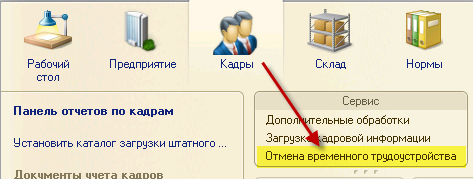
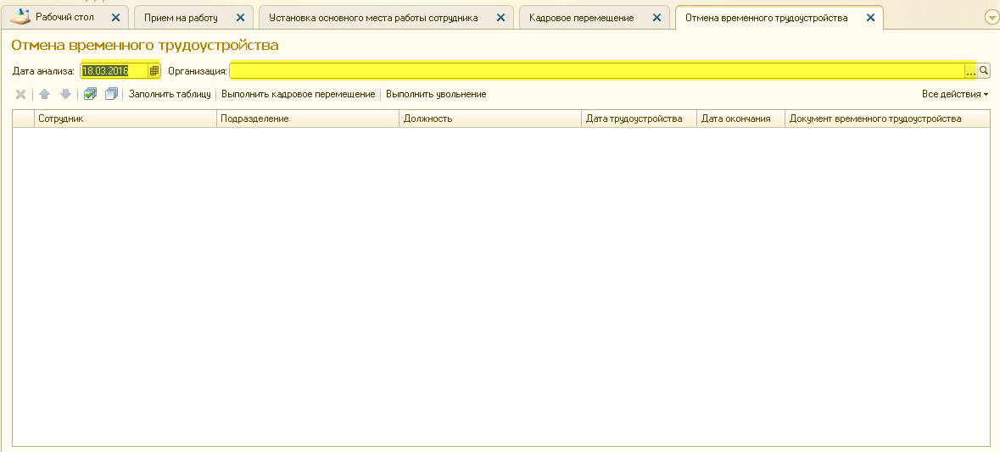
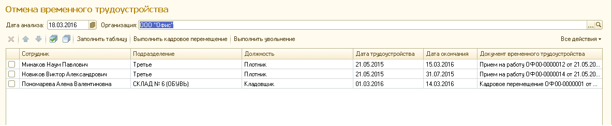
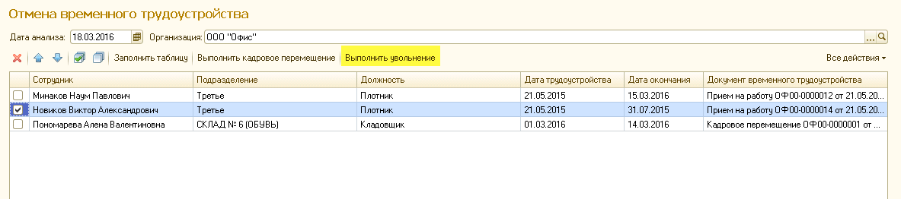
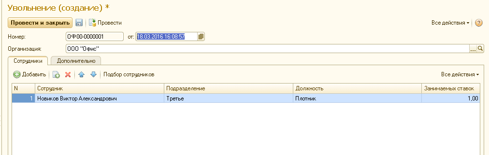
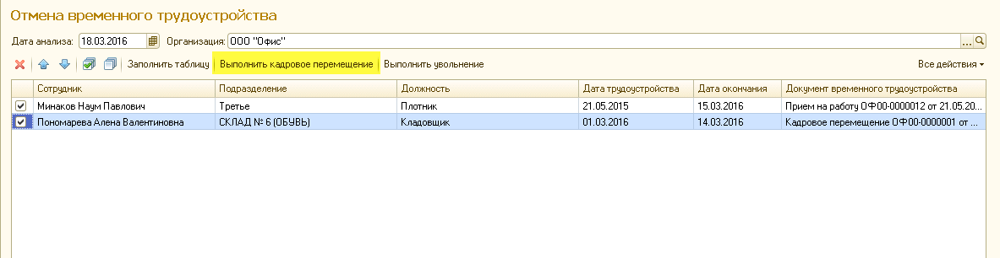
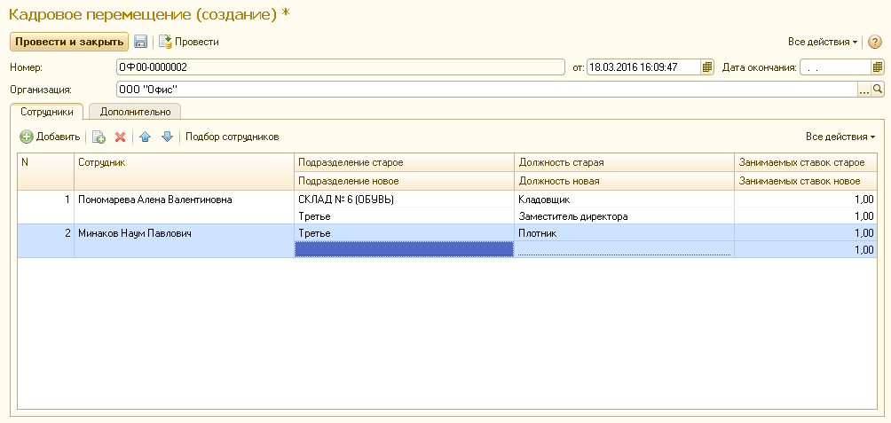

Для открытия обработки зайдите в раздел "Кадры", далее "Отмена временного трудоустройства".

Необходимо задать параметры списка сотрудников. Выберите дату анализа и организацию. Если вы установили сегодняшнюю дату, в анализ попадут сотрудники, срок окончания договора которых истек вчера.

После выбора параметров отобразится список сотрудников, чей срок договора истек.

В случае, если договор с сотрудником продлевать не планируется, необходимо выполнить увольнение сотрудника. Для этого нужно установить флажок и нажать "Выполнить увольнение"

Откроется документ "Увольнение" с уже заполненными параметрами. Нажмите "Провести и закрыть".

Если принято решение перевести сотрудника на другую должность по истечению срока договора, установите флажок на выбранного сотрудника и нажмите "Выполнить кадровое перемещение".

Откроется документ "Кадровое перемещение". Если перемещение оформляется на сотрудника, который был принят на временную должность "Приемом на работу", новое место работы не заполняется, необходимо выбрать вручную (на примере Минаков Н.П.). Если перемещение оформляется на сотрудника, переведенного на временную должность документом "Кадровое перемещение", новое место работы заполняется автоматически, в качестве него выступает исходное место работы, с которого производилось перемещение на временную должность (на примере Пономарева А.В.).
